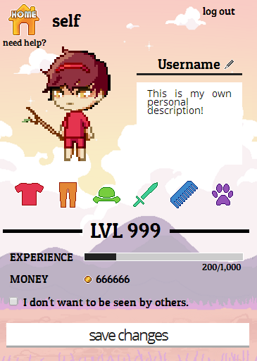

HTML, CSS, JavaScript, jQuery, Firebase.
A web-based mobile application designed to increase productivity by removing potential distractions and avoiding burn-out, with inspiration drawn from other games (such as Habitica, Neko Atsume, etc).
Our task was to design and implement a 'game' to help with an everyday need -- in our case, we chose to tackle the ever-present issue of productivity. Drawing inspiration from Pomodoro timers and other games, we created TimeyQuest: The Productivity RPG.
As an extended project, time management was key. Each group member had specific tasks to accomplish, based on prior experience. However, we all had to learn new skills to accomplish our tasks; in my case, implementing everything (other than images) on the front-end required learning JavaScript, jQuery, and a little bit of Firebase (our database system).
Not only that, but our endeavors to find ways to engage the user/player with intuitive gameplay and interfaces served as a markedly new experience for the entire group -- as computer science students, having to handle the 'user experience' portion of our app was difficult at first.
In the end, not only was the new knowledge of JS/jQuery invaluable, the method of producing our application -- through heuristic evaluations, user testing, user feedback, A/B testing, etc. -- gave us all a greater understanding of user-centered design and of the design process itself.